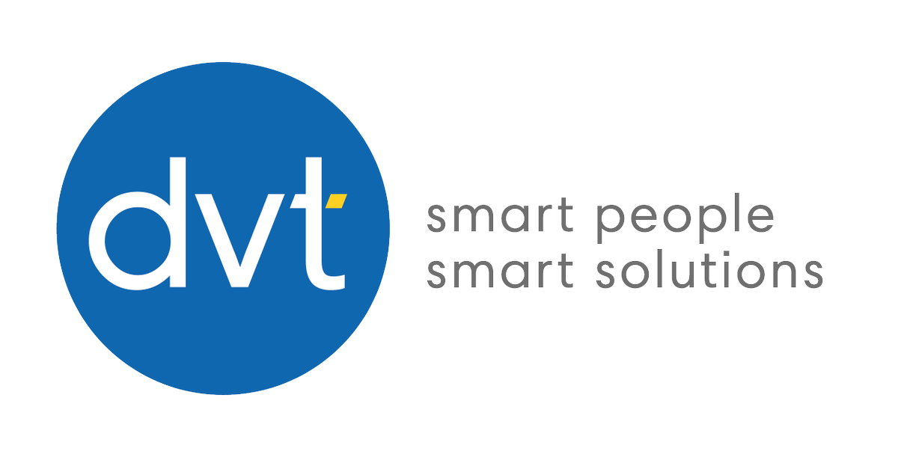
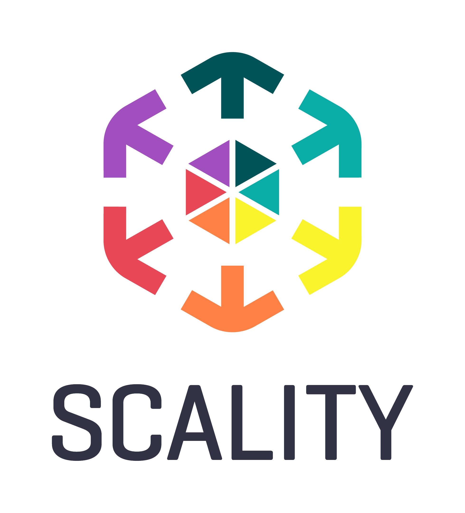

Strategic ecosystem. Orchestrated outcomes.
CoreCloud aligns technology and delivery capability around client outcomes, not vendor agendas.
Real capability, not logo theatre.
CoreCloud's partner ecosystem gives clients access to proven infrastructure, software engineering, data, storage and delivery capability.

DVT
Enterprise EngineeringEnterprise applications, digital platforms, modern engineering and product delivery capacity.

Scality
Sovereign Data CapabilityCyber-resilient object storage, sovereign data architectures, scale, durability and ransomware-resilient storage.

Dell Technologies
Enterprise ComputeEnterprise compute, infrastructure modernisation and workload-aligned technology foundations.

Hewlett Packard Enterprise
Hybrid InfrastructureHybrid platforms, infrastructure foundations and enterprise technology capability for modern workloads.

Hitachi Vantara
Enterprise Data InfrastructureEnterprise-grade infrastructure capability for resilient, data-intensive and mission-critical environments.
CoreCloud Talent
Execution CapabilitySpecialist people capability to execute across cloud, data, AI, security, architecture and applications.
Why ecosystems matter.
Technology has become too specialised for single-provider thinking.
Infrastructure, cloud, security, data, AI, software engineering and talent each require specialist capability.
CoreCloud remains outcome-focused and platform-agnostic by assembling the right ecosystem around each requirement.
Outcome → Capability → Ecosystem.
Partner selection should follow capability requirements, venue decisions, governance needs and execution realities.
Venue-led decisions
Determine where workloads belong before selecting the partner ecosystem.
Orchestrated delivery
Coordinate partners, platforms, talent and execution into a coherent capability model.
Capability marketplaces
Extend ecosystem capability through structured marketplace and exchange models.